hehe, it's really the solution except the mesh is too coarse(the
figure is plotted by IBM Open Data Explorer).
Step 6: Mesh Adaptation
Mesh adaptation is only supported for simplex element in the package. The class Mesh<DOW,DIM> doesn't support mesh adaptation automaticly because the mesh adaptation is based on the finite element base part. A derived class RegularMesh<DIM> will support mesh adaptation. The mesh adaptation is designed to support multimesh machenism at the beginning that even you want to adapt one mesh, it will be taken as multiple mesh adaptation. Let's see how to write such code.This is a comparative complete example to show how to implement a mesh adaptation on a 2D mesh except there are no detail how to set the indicator. In the following figures there is a example we get to refine the meshes in two contacted circle. The first figure is the original macro mesh and the second one is the refined mesh and the third one is the local detail of the refined mesh.#include <AFEPack/HGeometry.h> // the head file declaring those class support mesh adaptation
int main(void)
{// construct a hierarchy geometry tree for 2 dimensional case
HGeometryTree<2> h_geometry_tree;
// read in the macro mesh from easymesh formatted data files
h_geometry_tree.readEasyMesh("mesh_file_name");
// construct a irregular mesh based on the hierarchy geometry tree
IrregularMesh<2> irregular_mesh(h_geometry_tree);
// semiregularize the irregular mesh to a so called semi-regular mesh
irregular_mesh.semiregularize(); // because the macro mesh from easymesh formatted data is always
// semi-regular, we in fact can omit this line. but for a general
// irregular mesh, this line is essential.
// regularize the mesh to get the regular mesh from the irregular mesh
irregular_mesh.regularize(false); // if the argument is true, the elements of the mesh will be sorted
// according certain principle to try to minimize the band width of
// the obtained matrix.
// construct an indicator on the regular mesh from the irregular mesh
Indicator<2> indicator(irregular_mesh.regularMesh());
... ... // you can set the value of the indicator to control how to adapt the mesh by certain way.
// see example in the following part to see how to do that
// construct a mesh adaptor which will provide facilities to implement the mesh adaptation
MeshAdaptor<2> mesh_adaptor(irregular_mesh);
// set the convergence order of the mesh adaptor as 1.0
mesh_adaptor.convergenceOrder() = 1.;
// and the refine step as 1
mesh_adaptor.refineStep() = 1;
// and the indicator is the one we gave just now
mesh_adaptor.setIndicator(indicator);
// the tolerence of the mesh adaptor is set as 1.0e-8
mesh_adaptor.tolerence() = 1.0e-8;
// implement the mesh adaption
mesh_adaptor.adapt();
// now the mesh is adapted. let's get the regular mesh from it to see what a mesh we get
// this mesh is really not semiregular after the adaptation now. we semiregularize it at first
irregular_mesh.semiregularize();
// and then construct the regular mesh from it
irregular_mesh.regularize(false);
// save the regular mesh to certain data files
irregular_mesh.regularMesh().writeEasyMesh("mesh_file_name");};
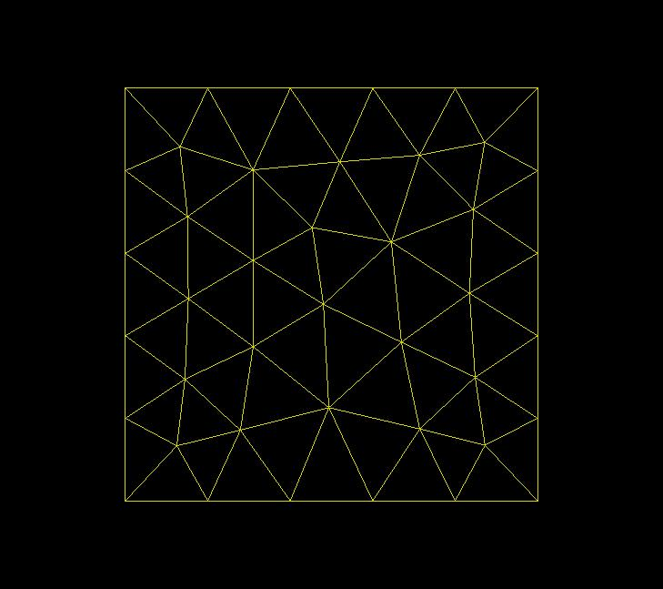
 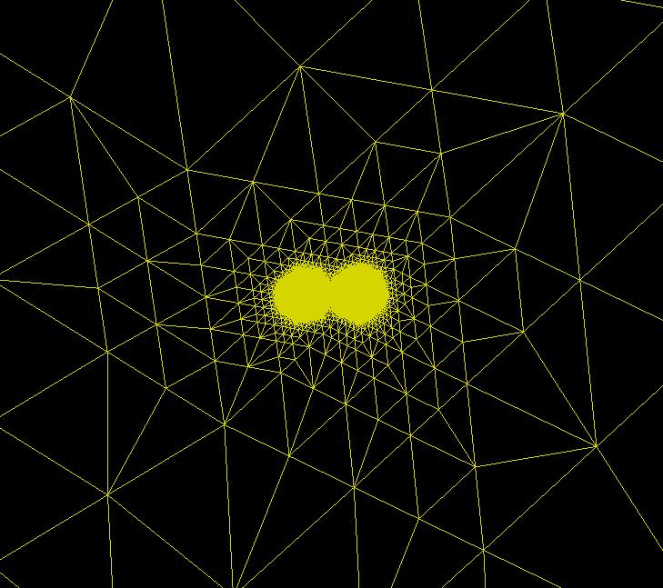
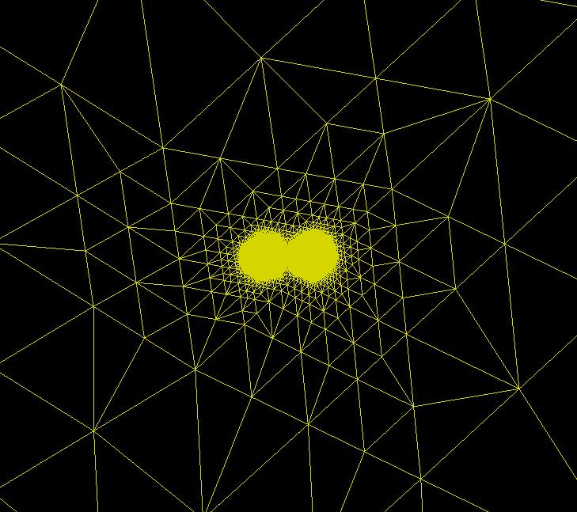
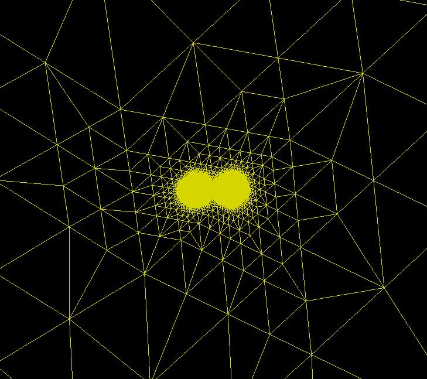
Step 7: Multi-Mesh Operation
In this step, we will build two finite element spaces on two different meshes and then construct the matrix of a bilinear operator on this two finite element spaces to show how to code with the multi-mesh facilities in the package. Of course, again the two meshes should base on the same hierarchy geometry tree. We try to solve a elliptic system as-{\frac \partial {\partial x^i}} (a^0_{ij} {\frac {\partial
u^0} {\partial x^j}}) + c^0_i u^i = f^0
-{\frac \partial {\partial x^i}} (a^1_{ij} {\frac {\partial
u^1} {\partial x^j}}) + c^1_i u^i = f^1
with Dirichlet boundary condition as
u^0 = u^0_b, on \partial \Omega
u^1 = u^1_b, on \partial \Omega
u^1 = u^1_b, on \partial \Omega
We assume that $\Omega$ is a 2D domain and $c^0$,
$c^1$ can guarantee that the whole system have a uniqe solution.
If the coefficients in the divergence operator are discontinuous and
$a^0$ has different irregularity as $a^1$ - "different"
here means the discontinuity of the functions are at different location
of the domain, the solution $u^0$ and $u^1$ will have
different irregularity as well as the coefficients. A mesh adaptation
algorithm should find out the discontinuity and give a suitable mesh for
$u^0$ and $u^1$ respectively. The weak formation of this
problem is as
The following figures are an example we got with data set as that $u^0$ have a circle discontinuity while $u^1$ have two straight line discontinuity (see the source code of this example in the package in example/step-7).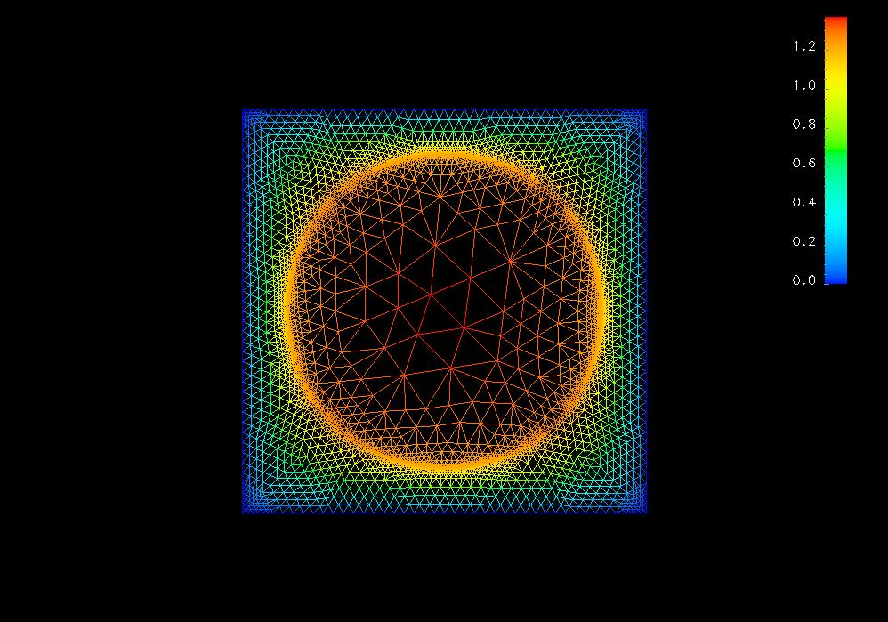
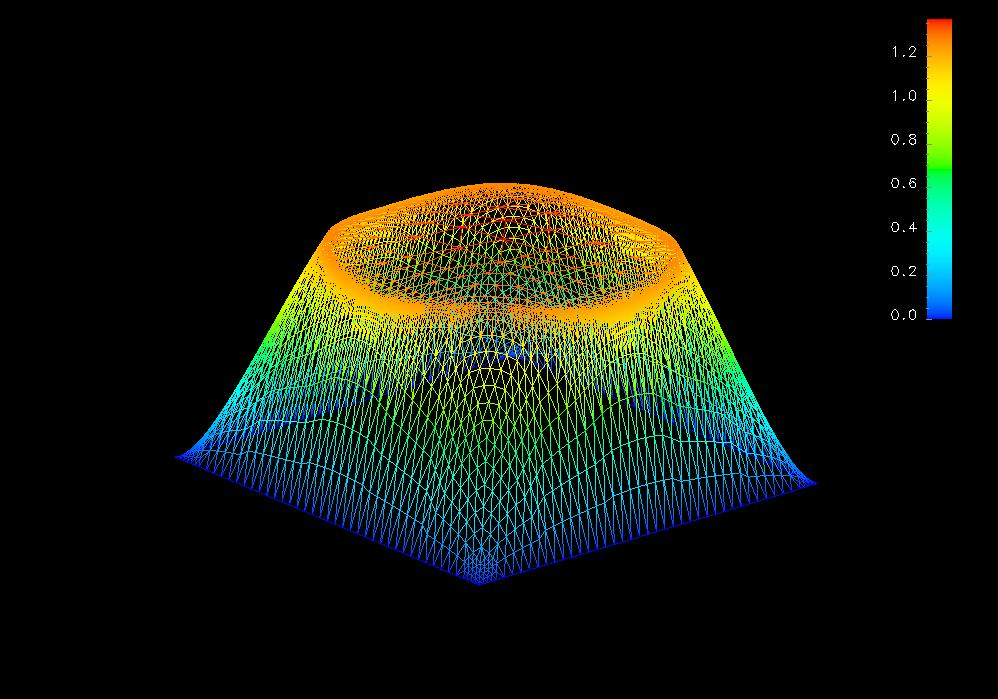
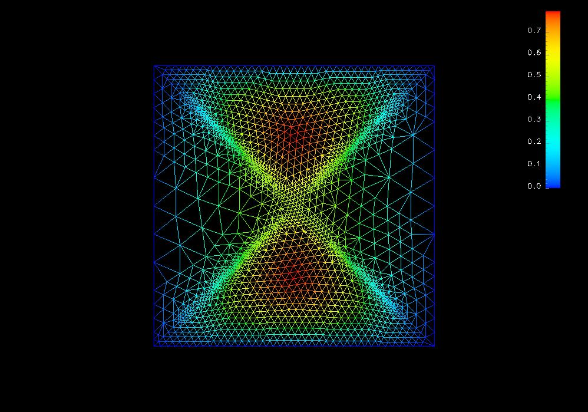
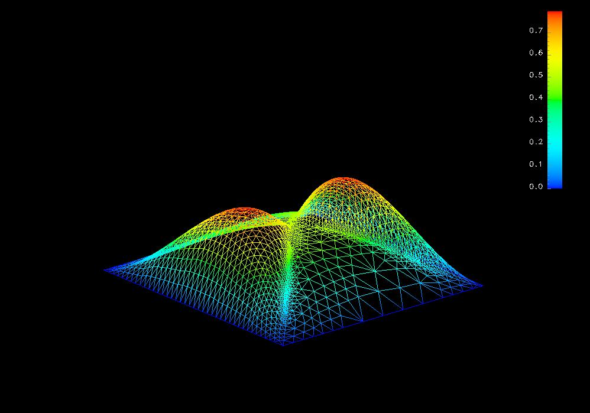
In this example, in fact we only used some simple facilities to operate two meshes. After some understanding to the source code of the package, you can make use of the multi-mesh mechanism of the package much more flexible.
In the following data formation description, the left column is the data using C syntax, and the right column is the comments which should not appear in the data file. The data file format for a mesh object Mesh<DIM,DOW> is as:
Next Previous Contents
A^0(u^0, \phi) + C^0(u^1, \phi) = (f^0, \phi)
C^1(u^0, \psi) + A^1(u^1, \psi) = (f^1, \psi)
in whichC^1(u^0, \psi) + A^1(u^1, \psi) = (f^1, \psi)
A^n(\phi, \psi) = \int_\Omega a^n \nabla \phi \nabla
\psi + c^n_n \phi \psi dx
C^n(\phi, \psi) = \int_\Omega c^n_{mod(n+1,2)} \phi \psi dx
(\phi, \psi) = \int_\Omega \phi \psi dx
As able to be imagined, this is a comparative complex
example that we should declare a new class to make the code more
readable and this example will should the typical structure of a complete
mesh adaptaion algorithm.C^n(\phi, \psi) = \int_\Omega c^n_{mod(n+1,2)} \phi \psi dx
(\phi, \psi) = \int_\Omega \phi \psi dx
Such a header file is a very standard example to write an adaptive program. We need a main file to start the program as// EllipticSystem.h
#ifndef _ELLIPTICSYSTEM_H_
#include <AFEPack/Geometry.h>
#include <AFEPack/TemplateElement.h>
#include <AFEPack/FEMSpace.h>
#include <AFEPack/HGeometry.h>
#include <AFEPack/BilinearOperator.h>
#include <AFEPack/Operator.h>
#define DIM 2
class EllipticSystem {
public:
// this class is used to construct matrix $A^0$ and $A^1$
class Matrix_A : public StiffMatrix<DIM,double> {
private:
double (*a[DIM][DIM])(const double *);
double (*c)(const double *);
public:
Matrix_A(double (*a00)(const double *), double (*a01)(const double *),
double (*a10)(const double *), double (*a11)(const double *),
double (*c0)(const double *), FEMSpace<double,DIM>& sp) :
StiffMatrix<DIM,double>(sp) {
a[0][0] = a00;
a[0][1] = a01;
a[1][0] = a10;
a[1][1] = a11;
c = c0;
};
virtual ~Matrix_A() {};
public:
virtual void getElementMatrix(const Element<value_type0,DIM>&,
const Element<value_type1,DIM>&,
const ActiveElementPairIterator<DIM>::State state = ActiveElementPairIterator<DIM>::EQUAL);
};
// this class is used to construct matrix $C^0$ and $C^1$
class Matrix_C : public L2InnerProduct<DIM,double> {
private:
double (*c)(const double *);
public:
Matrix_C(double (*c1)(const double *), FEMSpace<double,DIM>& sp0, FEMSpace<double,DIM>& sp1) :
c(c1), L2InnerProduct<DIM,double>(sp0, sp1) {};
~Matrix_C() {};
public:
virtual void getElementMatrix(const Element<value_type0,DIM>&,
const Element<value_type1,DIM>&,
const ActiveElementPairIterator<DIM>::State state = ActiveElementPairIterator<DIM>::EQUAL);
};
private:
std::string mesh_file; // file name of mesh
HGeometryTree<DIM> h_geometry_tree; // the geometry tree
IrregularMesh<DIM> irregular_mesh[DIM]; // the meshes
FEMSpace<double,DIM> fem_space[DIM]; // the finite element space
FEMFunction<double,DIM> solution[DIM]; // the solution
Indicator<DIM> indicator[DIM]; // indicator to adapt the meshes
// variables used to contruct template elements
std::vector<TemplateElement<double,DIM,DIM> > template_element;
TemplateGeometry<DIM> triangle_template_geometry;
CoordTransform<DIM,DIM> triangle_coord_transform;
TemplateDOF<DIM> triangle_1_template_dof;
BasisFunctionAdmin<double,DIM,DIM> triangle_1_basis_function;
TemplateGeometry<DIM> twin_triangle_template_geometry;
CoordTransform<DIM,DIM> twin_triangle_coord_transform;
TemplateDOF<DIM> twin_triangle_1_template_dof;
BasisFunctionAdmin<double,DIM,DIM> twin_triangle_1_basis_function;
public: // contructors and destructor
EllipticSystem(const std::string& filename);
~EllipticSystem() {};
public: //
// initialize those memeber variables
void init();
// the engine to run the program
void run();
// adapt mesh
void adaptMesh();
// build finite element space
void buildFEMSpace();
// construct the linear system and solve it
void solve();
// calculate the indicator used to adapt the mesh using Kelly estimator
void getIndicator();
// calculate the error of the solution
void getError();
// save data
void saveData();
};
#endif // _ELLIPTICSYSTEM_H_
The following is the implementation of the class EllipticSystem// main.cpp
#include "EllipticSystem.h"
int main(int argc, char * argv[])
{
if (argc != 2) {
std::cout << "Usage: "
<< argv[0]
<< " mesh_file_name"
<< std::endl;
return 1;
}
try {
EllipticSystem elliptic_system(argv[1]);
elliptic_system.run();
}
catch(std::exception& e) {
std::cerr << "Exception caughted:" << std::endl
<< e.what ()
<< std::endl;
}
catch(...) {
std::cerr << "Exception caughted:" << std::endl
<< "unknown exception caughted."
<< std::endl;
}
};
// end of file
And we should give the function to calculate the element matrix for class Matrix_A and class Matrix_C which is one of the kernel work in the program, too. See following// EllipticSystem.cpp
EllipticSystem::EllipticSystem(const std::string& filename) :
mesh_file(filename)
{
init();
};
void EllipticSystem::run()
{
do {
buildFEMSpace();
solve();
saveData();
getError();
getIndicator();
adaptMesh();
} while (1);
};
void EllipticSystem::init()
{
// read in the mesh data file to construct the hierarchy geometry tree. the mesh data is assumed to
// be easymesh format
h_geometry_tree.readEasyMesh(mesh_file);
// construct the irregular meshes based on the hierarchy geometry tree
for (int i = 0;i < DIM;i ++)
irregular_mesh[i].reinit(h_geometry_tree);
// construct the piecewise linear triangle element
triangle_template_geometry.readData("triangle.tmp_geo");
triangle_coord_transform.readData("triangle.crd_trs");
triangle_1_template_dof.reinit(triangle_template_geometry);
triangle_1_template_dof.readData("triangle.1.tmp_dof");
triangle_1_basis_function.reinit(triangle_1_template_dof);
triangle_1_basis_function.readData("triangle.1.bas_fun");
// construct the piecewise linear twin triangle element. this element is special for this adaptive
// package which is in fact the combination of two piecewise linear triangle element
twin_triangle_template_geometry.readData("twin_triangle.tmp_geo");
twin_triangle_coord_transform.readData("twin_triangle.crd_trs");
twin_triangle_1_template_dof.reinit(twin_triangle_template_geometry);
twin_triangle_1_template_dof.readData("twin_triangle.1.tmp_dof");
twin_triangle_1_basis_function.reinit(twin_triangle_1_template_dof);
twin_triangle_1_basis_function.readData("twin_triangle.1.bas_fun");
// construct the two template elements using the information got by the last lines
template_element.resize(2);
template_element[0].reinit(triangle_template_geometry,
triangle_1_template_dof,
triangle_coord_transform,
triangle_1_basis_function);
template_element[1].reinit(twin_triangle_template_geometry,
twin_triangle_1_template_dof,
twin_triangle_coord_transform,
twin_triangle_1_basis_function);
};
void EllipticSystem::buildFEMSpace()
{
for (int n = 0;n < DIM;n ++) {
irregular_mesh[n].semiregularize();
irregular_mesh[n].regularize();
RegularMesh<DIM>& regular_mesh = irregular_mesh[n].regularMesh();
fem_space[n].reinit(regular_mesh, template_element);
int n_element = regular_mesh.n_geometry(DIM);
fem_space[n].element().resize(n_element);
for (int i = 0;i < n_element;i ++) {
const GeometryBM& geometry = regular_mesh.geometry(DIM, i);
switch (geometry.n_vertex()) {
case 3: // this is a triangle, we use the triangle template
fem_space[n].element(i).reinit(fem_space[n],i,0);
break;
case 4: // this is a twin-triangle, we use the twin-triangle template
fem_space[n].element(i).reinit(fem_space[n],i,1);
break;
default: // something must be wrong
Assert(false, ExcNotImplemented());
}
}
fem_space[n].buildElement();
fem_space[n].buildDof();
fem_space[n].buildDofBoundaryMark();
solution[n].reinit(fem_space[n]);
}
};
void EllipticSystem::adaptMesh()
{
MeshAdaptor<DIM> mesh_adaptor;
for (int i = 0;i < DIM;i ++) {
mesh_adaptor.reinit(irregular_mesh[i]);
mesh_adaptor.convergenceOrder() = 1.;
mesh_adaptor.refineStep() = 1;
mesh_adaptor.setIndicator(indicator[i]);
mesh_adaptor.tolerence() = 1.0e-8;
mesh_adaptor.adapt();
}
};
// as can be seen easily, under this standard frame of an adaptive program, the solver for the original
// problem is the certral part.
void EllipticSystem::solve()
{
// for the first equation
// build the matrix A0
Matrix_A A0(&_a0_00_, &_a0_01_, &_a0_10_, &_a0_11_, &_c0_0_, fem_space[0]);
A0.algebricAccuracy() = 2;
A0.build();
// prepare the right hand side
Vector<double> f0;
Operator::L2Discretize(&_f0_, fem_space[0], f0, 3);
// prepare the boundary condition
BoundaryFunction<double,DIM> u0_boundary(BoundaryConditionInfo::DIRICHLET, 1, &_u0_);
BoundaryConditionAdmin<double,DIM> u0_boundary_admin(fem_space[0]);
u0_boundary_admin.add(u0_boundary);
u0_boundary_admin.apply(A0, solution[0], f0);
// prepare the linear solver for A0
AMGSolver A0_solver(A0);
// build the matrix C0
Matrix_C C0(&_c0_1_, fem_space[0], fem_space[1]);
C0.algebricAccuracy() = 2;
C0.build();
// for the second equation
// build the matrix A1
Matrix_A A1(&_a1_00_, &_a1_01_, &_a1_10_, &_a1_11_, &_c1_1_, fem_space[1]);
A1.algebricAccuracy() = 2;
A1.build();
// prepare the right hand side
Vector<double> f1;
Operator::L2Discretize(&_f1_, fem_space[1], f1, 3);
// prepare the boundary condition
BoundaryFunction<double,DIM> u1_boundary(BoundaryConditionInfo::DIRICHLET, 1, &_u1_);
BoundaryConditionAdmin<double,DIM> u1_boundary_admin(fem_space[1]);
u1_boundary_admin.add(u1_boundary);
u1_boundary_admin.apply(A1, solution[1], f1);
// prepare the linear solver for A1
AMGSolver A1_solver(A1);
// build the matrix C1
Matrix_C C1(&_c1_0_, fem_space[1], fem_space[0]);
C1.algebricAccuracy() = 2;
C1.build();
// we adopt the block Gauss-Sidle iteration as the solver because $c^i$ are small
int i;
double error;
double tolerence = 1.0e-6;
do {
// backup the old solution
FEMFunction<double,DIM> old_solution[DIM];
for (i = 0;i < DIM;i ++)
old_solution[i] = solution[i];
// update $u^0$
Vector<double> C0xu1;
C0.vmult(C0xu1, solution[1]);
u0_boundary_admin.clearEntry(C0xu1);
C0xu1.sadd(-1.0, f0);
A0_solver.solve(solution[0], C0xu1);
// update $u^1$
Vector<double> C1xu0;
C1.vmult(C1xu0, solution[0]);
u1_boundary_admin.clearEntry(C1xu0);
C1xu0.sadd(-1.0, f1);
A1_solver.solve(solution[1], C1xu0);
// calculate the error
error = 0.0;
for (i = 0;i < DIM;i ++) {
old_solution[i].add(-1.0, solution[i]);
error += pow(Functional::L2Norm(old_solution[i],3), 2.0);
}
error = sqrt(error);
std::cout << "\r\terror = " << error << std::flush;
} while (error > tolerence);
std::cout << std::endl;
};
// we adopted only the leading term of the posteriori error estimator - saying the jump between the
// element boundary - to be calculated as the indicator. and the coefficient in the divergence operator
// is omitted, too, as this is only a very simple demonstration to show how to use the code.
void EllipticSystem::getIndicator()
{
for (int n = 0;n < DIM;n ++) {
RegularMesh<DIM>& regular_mesh = irregular_mesh[n].regularMesh();
indicator[n].reinit(regular_mesh);
int n_face = regular_mesh.n_geometry(DIM-1);
std::vector<bool> flag(n_face, false);
std::vector<double> jump(n_face);
FEMSpace<double,DIM>::ElementIterator the_element = fem_space[n].beginElement();
FEMSpace<double,DIM>::ElementIterator end_element = fem_space[n].endElement();
for (;the_element != end_element;the_element ++) {
const GeometryBM& geometry = the_element->geometry();
for (int i = 0;i < geometry.n_boundary();i ++) {
int j = geometry.boundary(i);
const GeometryBM& side = regular_mesh.geometry(1, j);
const Point<DIM>& p0 = regular_mesh.point(regular_mesh.geometry(0, side.boundary(0)).vertex(0));
const Point<DIM>& p1 = regular_mesh.point(regular_mesh.geometry(0, side.boundary(1)).vertex(0));
std::vector<double> gradient = solution[n].gradient(midpoint(p0, p1), *the_element);
if (flag[j]) {
jump[j] -= gradient[0]*(p0[1] - p1[1]) + gradient[1]*(p1[0] - p0[0]);
flag[j] = false;
}
else {
jump[j] = gradient[0]*(p0[1] - p1[1]) + gradient[1]*(p1[0] - p0[0]);
flag[j] = true;
}
}
}
the_element = fem_space[n].beginElement();
for (int m = 0;the_element != end_element;the_element ++, m ++) {
const GeometryBM& geometry = the_element->geometry();
indicator[n][m] = 0.0;
for (int i = 0;i < geometry.n_boundary();i ++) {
int j = geometry.boundary(i);
if (flag[j]) continue; // this side is on the boundary of the domain
indicator[n][m] += jump[j]*jump[j];
}
}
}
};
void EllipticSystem::getError()
{
double error;
error = Functional::L2Error(solution[0], FunctionFunction<double>(&_u0_), 3);
std::cout << "|| u_0 - u_0h ||_L^2 = " << error << std::endl;
error = Functional::L2Error(solution[1], FunctionFunction<double>(&_u1_), 3);
std::cout << "|| u_1 - u_1h ||_L^2 = " << error << std::endl;
};
void EllipticSystem::saveData()
{
solution[0].saveOpenDXData("u_0h.dx");
solution[1].saveOpenDXData("u_1h.dx");
};
// end of file
It's easy to see that we haven't give the formation of those coefficient functions. Their prototypes are all the same as// this matrix is in fact a weighted sum of a stiff matrix and a mass matrix which is based in fact only on one
// mesh that it's very easy to be implemented. this is a very standard function for the package.
void EllipticSystem::Matrix_A::getElementMatrix(
const Element<double,DIM>& element0,
const Element<double,DIM>& element1,
const ActiveElementPairIterator<DIM>::State state)
{
int j, k, l, j1, k1;
int n_element_dof0 = elementDof0().size();
int n_element_dof1 = elementDof1().size();
double volume = element0.templateElement().volume();
const QuadratureInfo<DIM>& quad_info = element0.findQuadratureInfo(algebricAccuracy());
std::vector<double> jacobian = element0.local_to_global_jacobian(quad_info.quadraturePoint());
int n_quadrature_point = quad_info.n_quadraturePoint();
std::vector<Point<DIM> > q_point = element0.local_to_global(quad_info.quadraturePoint());
std::vector<std::vector<double> > basis_value = element0.basis_function_value(q_point);
std::vector<std::vector<std::vector<double> > > basis_gradient = element0.basis_function_gradient(q_point);
for (int l = 0;l < n_quadrature_point;l ++) {
double Jxw = quad_info.weight(l)*jacobian[l]*volume;
double a_value[DIM][DIM];
for (j1 = 0;j1 < DIM;j1 ++)
for (k1 = 0;k1 < DIM;k1 ++)
a_value[j1][k1] = (*a[j1][k1])(q_point[l]);
double c_value = (*c)(q_point[l]);
for (j = 0;j < n_element_dof0;j ++) {
for (k = 0;k < n_element_dof1;k ++) {
for (j1 = 0;j1 < DIM;j1 ++) {
for (k1 = 0;k1 < DIM;k1 ++) {
elementMatrix(j, k) += Jxw * a_value[j1][k1]
* basis_gradient[j][l][j1] * basis_gradient[k][l][k1];
}
}
elementMatrix(j, k) += Jxw * c_value * basis_value[j][l] * basis_value[k][l];
}
}
}
};
// this matrix is a weighted L^2 inner product between two finite element spaces. this function is also a very
// standard example to calculate the matrix of a bilinear operator between two finite element spaces.
void EllipticSystem::Matrix_C::getElementMatrix(
const Element<double,DIM>& element0,
const Element<double,DIM>& element1,
const ActiveElementPairIterator<DIM>::State state)
{
int n_element_dof0 = elementDof0().size();
int n_element_dof1 = elementDof1().size();
if (state == ActiveElementPairIterator<DIM>::GREAT_THAN) {
double volume = element1.templateElement().volume();
const QuadratureInfo<DIM>& quad_info = element1.findQuadratureInfo(algebricAccuracy());
std::vector<double> jacobian = element1.local_to_global_jacobian(quad_info.quadraturePoint());
int n_quadrature_point = quad_info.n_quadraturePoint();
std::vector<Point<DIM> > q_point = element1.local_to_global(quad_info.quadraturePoint());
std::vector<std::vector<double> > basis_value0 = element0.basis_function_value(q_point);
std::vector<std::vector<double> > basis_value1 = element1.basis_function_value(q_point);
for (int l = 0;l < n_quadrature_point;l ++) {
double Jxw = quad_info.weight(l)*jacobian[l]*volume;
double c_value = (*c)(q_point[l]);
for (int j = 0;j < n_element_dof0;j ++) {
for (int k = 0;k < n_element_dof1;k ++) {
elementMatrix(j,k) += Jxw * c_value * basis_value0[j][l] * basis_value1[k][l];
}
}
}
}
else {
double volume = element0.templateElement().volume();
const QuadratureInfo<DIM>& quad_info = element0.findQuadratureInfo(algebricAccuracy());
std::vector<double> jacobian = element0.local_to_global_jacobian(quad_info.quadraturePoint());
int n_quadrature_point = quad_info.n_quadraturePoint();
std::vector<Point<DIM> > q_point = element0.local_to_global(quad_info.quadraturePoint());
std::vector<std::vector<double> > basis_value0 = element0.basis_function_value(q_point);
std::vector<std::vector<double> > basis_value1 = element1.basis_function_value(q_point);
for (int l = 0;l < n_quadrature_point;l ++) {
double Jxw = quad_info.weight(l)*jacobian[l]*volume;
double c_value = (*c)(q_point[l]);
for (int j = 0;j < n_element_dof0;j ++) {
for (int k = 0;k < n_element_dof1;k ++) {
elementMatrix(j,k) += Jxw * c_value * basis_value0[j][l] * basis_value1[k][l];
}
}
}
}
};
it's very convenient to give flexible coefficient functions as such prototype to solve an elliptic system. Have a try!double foo(const double *);
The following figures are an example we got with data set as that $u^0$ have a circle discontinuity while $u^1$ have two straight line discontinuity (see the source code of this example in the package in example/step-7).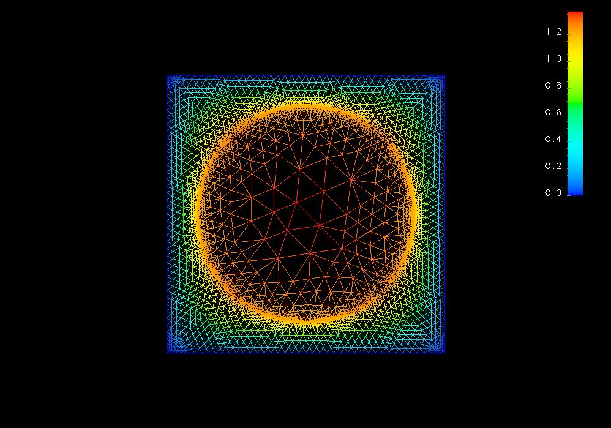
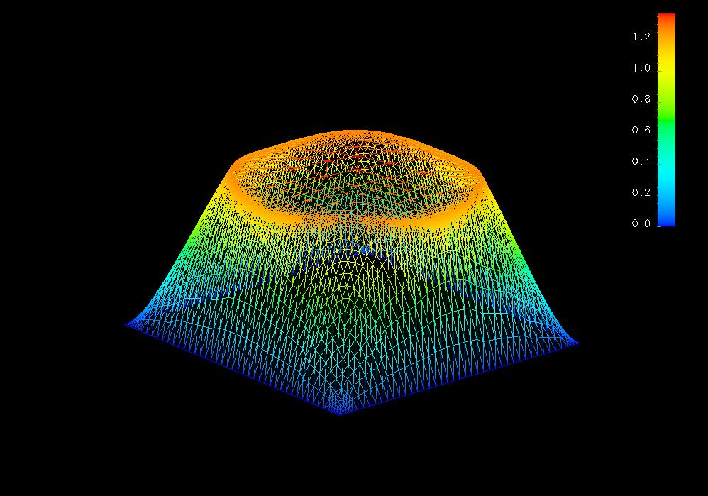
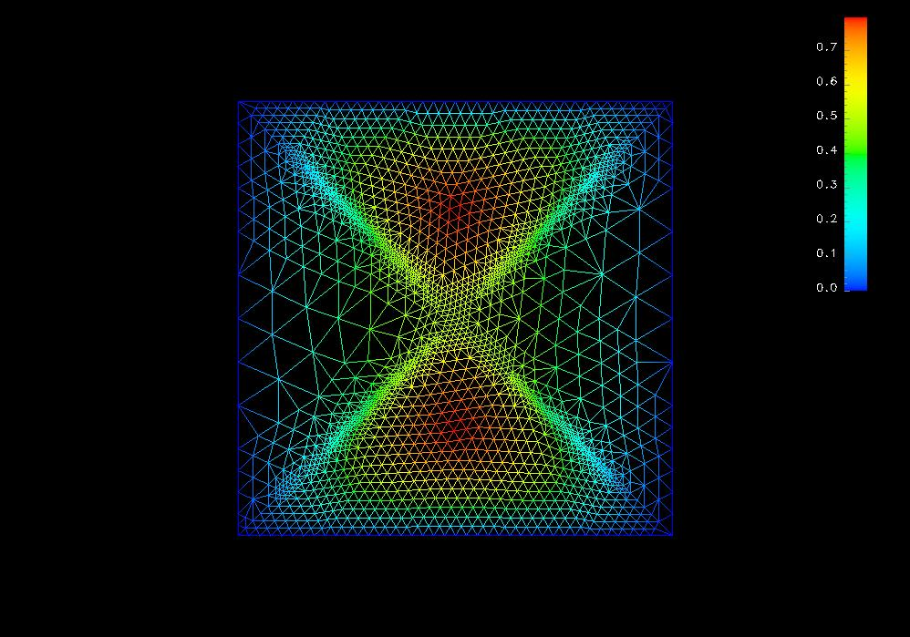
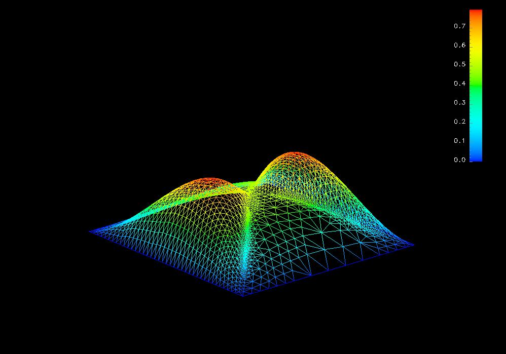
In this example, in fact we only used some simple facilities to operate two meshes. After some understanding to the source code of the package, you can make use of the multi-mesh mechanism of the package much more flexible.
3.2 Data File Format
The mesh data format please refer the document of those mesh generation software respestively. The following are the grammar for those data files to construct template element and the internal mesh data format. As we can see from the examples above, to construct a template element, we should write down two kinds of files - one are those C source files for the basis functions and for calculating element volume, the other are those data files.In the following data formation description, the left column is the data using C syntax, and the right column is the comments which should not appear in the data file. The data file format for a mesh object Mesh<DIM,DOW> is as:
in which the geometry information format is as for 0-dim:int # number of points (n_point)
double ... double # the coordinate of the 0-th point
... ... # ... ...
double ... double # the coordinate of the n_point-1st point
int # number of nodes (n_node), 0-dim geometry
geometry 0-dim # information of the 0-th 0-dim geometry
... ... # ... ...
geometry 0-dim # information of the n_node-1st geometry
... ... # ... ...
int # number of DIM-dim geometry (n_DIM_geometry)
geometry DIM-dim # information of the 0-th DIM-dim geometry
... ... # ... ...
geometry DIM-dim # information of the n_DIM_geometry-1st geometry
for n-dim:int # index of this node
int int # the first int is number of point for this node(should be 1), the second int is the index of that point
int int # the first int is number of boundary for this node(should be 1), the second int is the index of that boundary(meanless for node)
int # boundary marker of this node
The data file format for a template element geometry is as:int # index of this geometry
int int ... int # the first int is number of vertices, the followings are the index of those vertices
int int ... int # the first int is number of boundarys, the followings are the index of those boundarys((n-1)-dim)
int # boundary marker of this geometry
string # the filename of the shared library to get the volume function
string # the function name of the volume function
mesh information # mesh information for the element geometry, is a Mesh<DIM,DIM> object
quadrature information # quadrature points and weights information, see following
3.3 Advanced Techniques
3.4 Hacking Source Code
Next Previous Contents